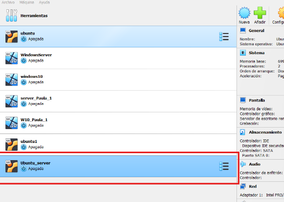
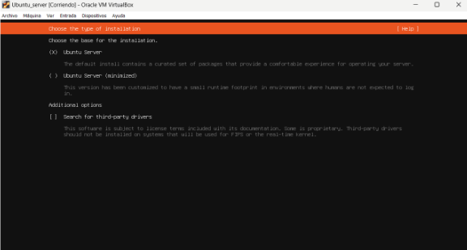
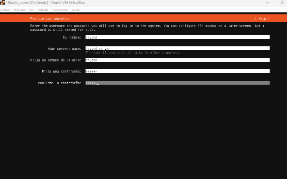
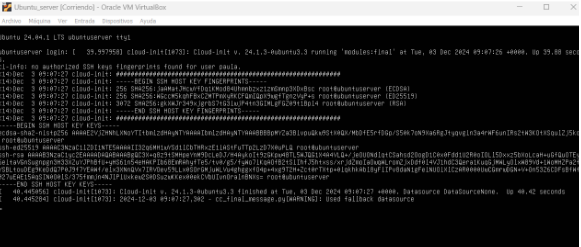
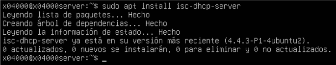
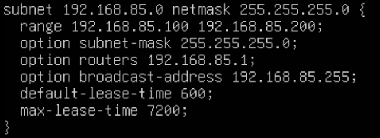
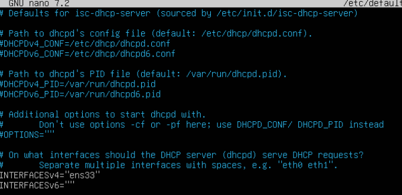
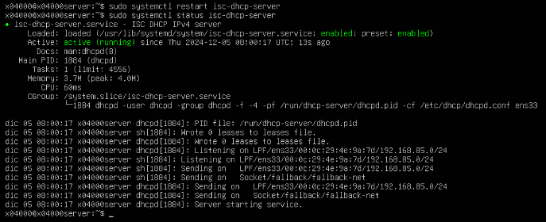
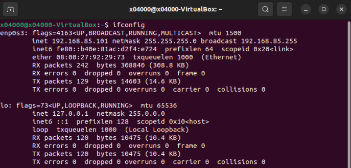

→ [ Beyond ] ←
Instalar Ubuntu Server
Instalamos en una máquina virtual Ubuntu Server
Creamos nuestra VM en nuestro VirtualBox.
Seleccionamos tipo de instalación.
Configruamos el nombre y usuario.
Verificamos la instalación.
Configurar DHCP
Instalamos el servicio DHCP y lo hacemos funcionar.
Instalamos isc-dhcp-server
En el archivo /etc/dhcp/dhcpd.conf configuraremos lo siguiente.
En /etc/default/isc-dhcp-server configuraremos el INTERFACESv4.
Con el comando sudo systemctl status isc-dhcp-server comprobaremos el estado del servicio.
En nuestro cliente Ubuntu comprobaremos que nos ha asignado correctamente la IP.
